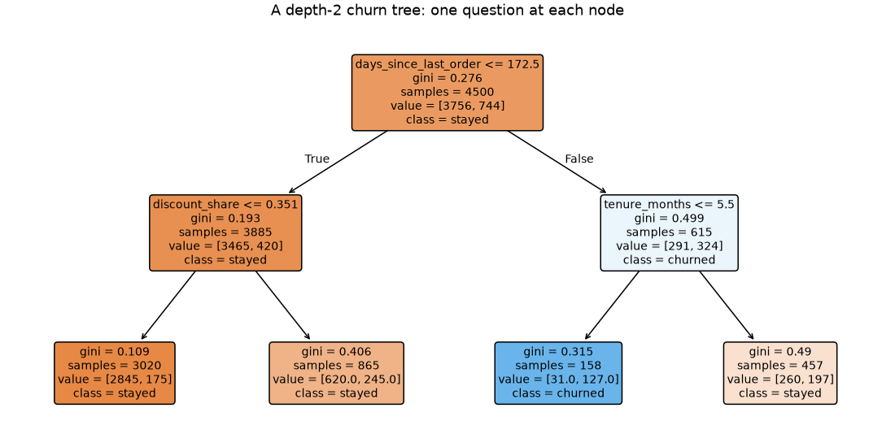
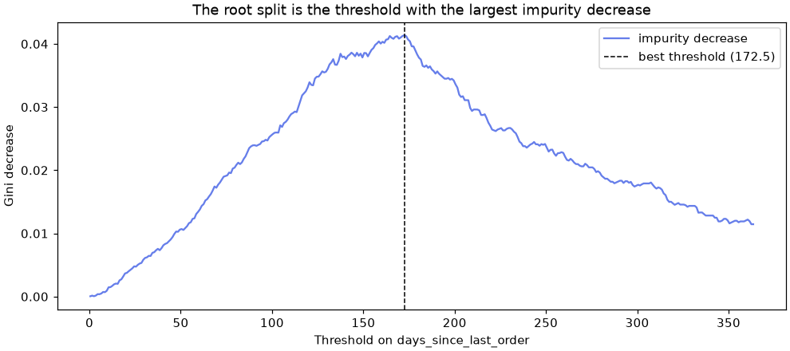
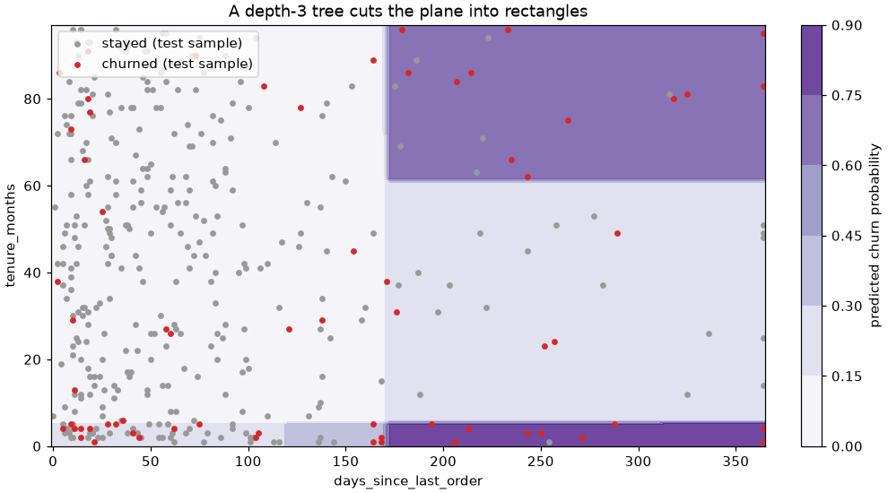
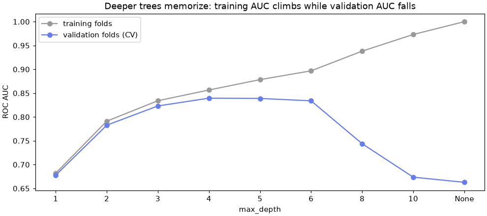

🌳 Lesson 5.1: Decision Trees
Teach a model to ask yes-or-no questions, read the rules it discovers in Pinecrest's churn data, and stop it from memorizing the training set.
🎯 Learning Objectives
By the end of this lesson, you will be able to:
- Explain how a classification tree chooses each split by reducing Gini impurity, and compute the impurity of a node by hand
- Train
DecisionTreeClassifierandDecisionTreeRegressor, and read their rules withexport_textandplot_tree - Explain where a tree's probabilities come from and why trees do not need scaled features
- Control overfitting with
max_depth,min_samples_leaf,max_leaf_nodesand cost-complexity pruning, chosen by cross-validation - Read a tree's feature importances, including what they cannot tell you
In This Lesson
🧭 Twenty Questions for Churn
Every model so far has worked by arithmetic: logistic regression adds up weighted features, k-nearest neighbors measures distances, a support vector machine finds a separating boundary. A decision tree works the way a person sorting case files might: it asks one yes-or-no question about one feature, splits the customers into two piles, and then asks another question about each pile, until the piles are mostly one kind.
💡 Mental Model: The Trail Junction Signposts
Picture a trail map for a customer. At the trailhead a signpost asks, "Has it been more than about 170 days since your last order?" Each answer sends the customer down a different trail, where the next signpost asks a different question. After a few junctions every trail ends at a campsite, and each campsite has a sign that says what share of the customers who walked that way in the past ended up leaving. That is the whole model: signposts (questions), trails (answers) and campsites (predictions).
Training a tree means choosing which question to post at each junction. Predicting means walking a new customer down the trails to a campsite and reading its sign.
Here is the actual tree you will grow in the next section, two questions deep ("recency" is days_since_last_order, "discounts" is discount_share, tenure is in months). The thresholds were not typed by anyone: the algorithm found them in the data.
🔑 Key Terms
Node: one point in the tree. The root is the first node, which holds every training row. An internal node asks a question (a split: one feature and one threshold). A leaf asks nothing and makes the prediction. Depth: the number of questions between the root and the deepest leaf.
🤔 Why This Matters
Trees matter for two reasons. A small tree is one of the few models you can print on a page and hand to a non-technical colleague: the customer-care team can follow it without knowing any math. And trees are the building block of the most successful models for tabular data: random forests (Lesson 5.2) and gradient boosting (Lesson 5.3) are both made of hundreds of trees. Understanding one tree well makes those lessons easy.
🌱 Your First Tree
Start a new notebook. Load the churn table and make the same split as Lesson 1.1, with the same ten numeric features. Then grow a tree that may ask at most two questions in a row (max_depth=2).
import numpy as np
import pandas as pd
import matplotlib.pyplot as plt
from sklearn.model_selection import train_test_split
from sklearn.tree import DecisionTreeClassifier, export_text
customers = pd.read_csv("data/customers_churn.csv")
features = ["tenure_months", "orders_12m", "spend_12m", "avg_order_value", "days_since_last_order",
"returns_12m", "return_rate", "support_tickets_12m", "discount_share", "app_user"]
X = customers[features]
y = customers["churned"]
X_train, X_test, y_train, y_test = train_test_split(X, y, test_size=0.25, stratify=y, random_state=42)
small_tree = DecisionTreeClassifier(max_depth=2, random_state=42)
small_tree.fit(X_train, y_train)
print(export_text(small_tree, feature_names=features, show_weights=True))Output
|--- days_since_last_order <= 172.50
| |--- discount_share <= 0.35
| | |--- weights: [2845.00, 175.00] class: 0
| |--- discount_share > 0.35
| | |--- weights: [620.00, 245.00] class: 0
|--- days_since_last_order > 172.50
| |--- tenure_months <= 5.50
| | |--- weights: [31.00, 127.00] class: 1
| |--- tenure_months > 5.50
| | |--- weights: [260.00, 197.00] class: 0export_text prints the tree as indented rules. Each weights line is a leaf: how many training customers reached it, as [stayed, churned] (the order of classes_, 0 then 1), and the class it predicts. Read the first leaf: 3,020 customers who ordered within the last 172.5 days and rarely used discounts, of whom only 175 churned.
Look at what the tree found by itself. The first question is about recency, with a threshold near 170 days. The second-level questions pick out discount reliance and very new customers (tenure of 5 months or less). Nobody told the tree to look for a cut-off; it searched every possible one and picked the best. The 158 customers in the third leaf (lapsed and brand new) churned at 80%.
💡 Why a Tree Gets random_state
A tree has no random sampling, but when two features would give exactly the same improvement, scikit-learn breaks the tie by visiting the features in a random order. random_state=42 makes that order, and so the tree, the same on every run. As everywhere in this course, the value 42 does not matter; fixing it does.
The same tree as a picture. plot_tree draws each node as a box; filled=True colors it by the majority class and how pure the node is.
from sklearn.tree import plot_tree
fig, ax = plt.subplots(figsize=(10, 5), layout="constrained")
plot_tree(small_tree, feature_names=features, class_names=["stayed", "churned"],
filled=True, rounded=True, fontsize=9, ax=ax)
ax.set_title("A depth-2 churn tree: one question at each node")
plt.show()
class_names must list the class labels in the order of classes_ (here 0 then 1), so "stayed" comes first. Get that order wrong and every box is mislabeled with no error at all (Common Mistake 3).
⚖️ How a Tree Picks a Question
To choose a split, the tree needs a number that says how mixed a pile of customers is. scikit-learn's default is Gini impurity:
💡 Gini Impurity in One Line
Gini = 1 − Σ pk², where pk is the share of class k in the node. Intuition: pick two customers from the node at random (with replacement); Gini is the chance that they belong to different classes. A pure node (all stayed) has Gini 0. A 50/50 node has the maximum for two classes, 0.5.
A good split produces children that are purer than the parent. The tree measures this as the impurity decrease: the parent's Gini minus the children's Gini, each child weighted by its share of the rows. Check the root split by hand:
def gini(counts):
p = np.asarray(counts) / np.sum(counts)
return 1 - np.sum(p ** 2)
root = np.bincount(y_train) # [stayed, churned]
left = np.bincount(y_train[X_train["days_since_last_order"] <= 172.5])
right = root - left
weighted = (left.sum() * gini(left) + right.sum() * gini(right)) / root.sum()
print("root", root, " left", left, " right", right)
print(f"Gini root {gini(root):.4f} left {gini(left):.4f} right {gini(right):.4f}")
print(f"weighted Gini of the children {weighted:.4f}, decrease {gini(root) - weighted:.4f}")
t = small_tree.tree_
print("scikit-learn's values:", t.impurity[[0, t.children_left[0], t.children_right[0]]].round(4))Output
root [3756 744] left [3465 420] right [291 324]
Gini root 0.2760 left 0.1928 right 0.4986
weighted Gini of the children 0.2346, decrease 0.0414
scikit-learn's values: [0.276 0.1928 0.4986]Your hand calculation matches the numbers scikit-learn stored in the fitted tree (tree_ holds the raw tree: node 0 is the root and children_left / children_right give each node's children). The left child is much purer than the root; the right child is more mixed, but it holds only 615 customers, so it counts for less.
🔍 Trying Every Threshold
Why 172.5 and not 150 or 200? The tree simply tried them all. For a numeric feature it sorts the values and tests a threshold halfway between each pair of neighboring values. Do the same for recency and plot the impurity decrease for every threshold:
recency = X_train["days_since_last_order"].to_numpy()
thresholds = np.arange(0, 364) + 0.5
decrease = []
for cut in thresholds:
left = np.bincount(y_train[recency <= cut], minlength=2)
right = root - left
weighted = (left.sum() * gini(left) + right.sum() * gini(right)) / root.sum()
decrease.append(gini(root) - weighted)
best = thresholds[np.argmax(decrease)]
print(f"best recency threshold: {best} (impurity decrease {max(decrease):.4f})")
fig, ax = plt.subplots(figsize=(9, 4), layout="constrained")
ax.plot(thresholds, decrease, color="#667eea", label="impurity decrease")
ax.axvline(best, color="black", linestyle="--", linewidth=1, label=f"best threshold ({best})")
ax.set_xlabel("Threshold on days_since_last_order")
ax.set_ylabel("Gini decrease")
ax.set_title("The root split is the threshold with the largest impurity decrease")
ax.legend()
plt.show()Output
best recency threshold: 172.5 (impurity decrease 0.0414)
The tree does this scan for every feature and keeps the single best (feature, threshold) pair. You can watch that competition by growing a one-question tree (a stump) on each feature alone and reading its improvement:
rows = []
for col in features:
stump = DecisionTreeClassifier(max_depth=1, random_state=42).fit(X_train[[col]], y_train)
s = stump.tree_
children = (s.n_node_samples[1] * s.impurity[1] + s.n_node_samples[2] * s.impurity[2]) / s.n_node_samples[0]
rows.append({"feature": col, "threshold": s.threshold[0], "decrease": s.impurity[0] - children})
stumps = pd.DataFrame(rows).sort_values("decrease", ascending=False)
print(stumps.round(4).to_string(index=False))Output
feature threshold decrease
days_since_last_order 172.5000 0.0414
discount_share 0.3505 0.0142
tenure_months 5.5000 0.0125
spend_12m 443.2250 0.0114
orders_12m 6.5000 0.0108
app_user 0.5000 0.0039
avg_order_value 70.6050 0.0026
support_tickets_12m 0.5000 0.0018
returns_12m 2.5000 0.0010
return_rate 0.2415 0.0009Recency wins by a wide margin, so it becomes the root. Then the tree repeats the whole search inside each child, using only the customers in that child. That is why the two second-level questions differ: among recent buyers the best question was about discounts; among lapsed buyers it was about tenure.
⚠️ Greedy, Not Optimal
The tree picks the best split right now and never reconsiders it. A split that looks weak on its own but sets up two excellent splits below it will be missed. Finding the truly best tree is computationally out of reach for real data, so every practical library grows trees greedily like this. It works remarkably well, but it is one reason trees are unstable (later in this lesson).
Entropy is the other common impurity measure (criterion="entropy" or the equivalent "log_loss"): −Σ pk log₂ pk. It ranks splits almost the same way as Gini; Exercise 2 lets you check that on this data. Regression trees (DecisionTreeRegressor) use the same search but measure impurity as the variance of the target in the node (criterion="squared_error"), and each leaf predicts the mean of its training rows.
🎲 Predictions Come from Leaves
A tree's churn probability for a customer is simply the share of churners among the training customers in the leaf the customer lands in. apply tells you which leaf each row reaches:
leaf_of = small_tree.apply(X_test)
proba = small_tree.predict_proba(X_test)[:, 1]
per_leaf = pd.DataFrame({"leaf": leaf_of, "p_churn": proba, "churned": y_test.to_numpy()})
print(per_leaf.groupby("leaf").agg(customers=("churned", "size"),
predicted=("p_churn", "first"),
actual=("churned", "mean")).round(3))Output
customers predicted actual
leaf
2 1011 0.058 0.057
3 286 0.283 0.308
5 42 0.804 0.786
6 161 0.431 0.429Four leaves, so only four different probabilities exist: every one of the 1,500 test customers gets one of those four numbers. (Leaf ids are node numbers in the full tree, which is why they skip.) On the test customers the actual churn rates are close to the training proportions, which is a good sign that these four groups are real.
⚠️ Coarse Probabilities
A tree with few leaves ranks customers in a few big ties. That is fine for a rule book, but poor for a shortlist of exactly 50 people. A very deep tree has the opposite problem: most of its leaves are pure, so its probabilities are almost all 0 or 1 (Common Mistake 2). The forests in Lesson 5.2 fix this by averaging many trees.
📏 No Scaling Needed
A split asks "is this value above a threshold?" Rescaling a column moves the threshold but cannot change which customers fall on each side. Check it:
from sklearn.preprocessing import StandardScaler
scaler = StandardScaler().set_output(transform="pandas").fit(X_train)
scaled_tree = DecisionTreeClassifier(max_depth=2, random_state=42).fit(scaler.transform(X_train), y_train)
same = np.array_equal(scaled_tree.predict_proba(scaler.transform(X_test)), small_tree.predict_proba(X_test))
print("identical predictions:", same)
print("root threshold, raw vs scaled:", small_tree.tree_.threshold[0], scaled_tree.tree_.threshold[0].round(3))Output
identical predictions: True
root threshold, raw vs scaled: 172.5 1.021Same predictions, different threshold units. Trees are also unbothered by skewed columns and outliers in the features (a customer with 10,000 days would just land on the far side of a threshold). That is part of why trees are popular for messy business tables. In scikit-learn they also accept missing values in numeric columns directly; the project uses that.
🔲 Boxes, Not Lines
Every split cuts along one feature, so a tree carves the feature space into rectangles (boxes), each with its own prediction. Logistic regression draws a single straight boundary instead. Which is better depends on the true pattern. Fit both on just two features, recency and tenure, and draw the tree's boxes:
from sklearn.pipeline import make_pipeline
from sklearn.linear_model import LogisticRegression
from sklearn.inspection import DecisionBoundaryDisplay
from sklearn.metrics import roc_auc_score
pair = ["days_since_last_order", "tenure_months"]
tree_2d = DecisionTreeClassifier(max_depth=3, random_state=42).fit(X_train[pair], y_train)
logit_2d = make_pipeline(StandardScaler(), LogisticRegression()).fit(X_train[pair], y_train)
for name, model in [("logistic regression", logit_2d), ("tree, depth 3", tree_2d)]:
auc = roc_auc_score(y_test, model.predict_proba(X_test[pair])[:, 1])
print(f"{name:20s} test ROC AUC {auc:.3f}")
fig, ax = plt.subplots(figsize=(9, 5), layout="constrained")
disp = DecisionBoundaryDisplay.from_estimator(tree_2d, X_train[pair], response_method="predict_proba",
cmap="Purples", alpha=0.8, ax=ax)
fig.colorbar(disp.surface_, ax=ax, label="predicted churn probability")
shown = X_test[pair].assign(churned=y_test).sample(400, random_state=42)
for value, color, label in [(0, "#999999", "stayed"), (1, "#d62728", "churned")]:
part = shown[shown["churned"] == value]
ax.scatter(part[pair[0]], part[pair[1]], s=12, color=color, label=f"{label} (test sample)")
ax.set_title("A depth-3 tree cuts the plane into rectangles")
ax.legend(loc="upper left")
plt.show()Output
logistic regression test ROC AUC 0.704
tree, depth 3 test ROC AUC 0.774
With only these two features, a three-question tree beats logistic regression clearly. The reason is the shape of the effects. Churn risk jumps at a recency threshold rather than rising steadily, and it is high for brand-new customers and for the longest-standing ones (a U-shape in tenure). A single weighted sum cannot bend like that; a tree handles both with a couple of cuts. Trees also capture interactions naturally: the tenure question only applies on the lapsed side of the tree.
💡 The Flip Side
Boxes are a poor way to draw a smooth diagonal trend: a tree needs a staircase of many small boxes to approximate a straight sloped line, and each step needs data. When the truth is close to linear, logistic regression often wins with less data. Neither model is "better"; they make different assumptions about the shape of the world.
✂️ Growing Too Far, and Pruning
Left alone (max_depth=None, the default), a tree keeps splitting until every leaf is pure or holds a single customer. It then knows the training set by heart. Lesson 1.1's Exercise 2 hinted at this; now measure it properly with 5-fold cross-validation on the training set, scoring by ROC AUC because you care about ranking customers.
from sklearn.model_selection import StratifiedKFold, cross_validate, cross_val_score
cv = StratifiedKFold(n_splits=5, shuffle=True, random_state=42)
rows = []
for depth in [1, 2, 3, 4, 5, 6, 8, 10, None]:
res = cross_validate(DecisionTreeClassifier(max_depth=depth, random_state=42), X_train, y_train,
cv=cv, scoring="roc_auc", return_train_score=True)
rows.append({"max_depth": str(depth), "train_auc": res["train_score"].mean(), "cv_auc": res["test_score"].mean()})
depth_table = pd.DataFrame(rows)
print(depth_table.round(3).to_string(index=False))
fig, ax = plt.subplots(figsize=(9, 4), layout="constrained")
ax.plot(depth_table["max_depth"], depth_table["train_auc"], marker="o", color="#999999", label="training folds")
ax.plot(depth_table["max_depth"], depth_table["cv_auc"], marker="o", color="#667eea", label="validation folds (CV)")
ax.set_xlabel("max_depth")
ax.set_ylabel("ROC AUC")
ax.set_title("Deeper trees memorize: training AUC climbs while validation AUC falls")
ax.legend()
plt.show()Output
max_depth train_auc cv_auc
1 0.682 0.678
2 0.791 0.783
3 0.834 0.823
4 0.857 0.839
5 0.878 0.839
6 0.897 0.834
8 0.938 0.744
10 0.973 0.674
None 1.000 0.663
This is the bias-variance trade-off from Lesson 3.2 in its clearest form. A depth-1 tree is too simple (high bias). An unlimited tree has a perfect training score and the worst validation score (high variance): it has learned the quirks of individual customers. The useful range is in between, and only validation data can tell you where.
🎛️ The Controls
| Hyperparameter | What it limits | Typical use |
|---|---|---|
max_depth | Questions in a row | Simple, easy to explain; the same depth everywhere |
min_samples_leaf | Smallest allowed leaf | Guarantees every prediction rests on enough customers; often the best single control |
max_leaf_nodes | Total number of leaves | Grows the best splits first; ideal for a readable rule book |
min_impurity_decrease | Splits that help too little | Skips weak splits |
ccp_alpha | Grow fully, then prune back | Cost-complexity pruning (below) |
Limiting the leaf size often works better than limiting depth, because it lets the tree go deep where there is plenty of data and stay shallow where there is not:
for leaf in [1, 10, 25, 50, 100, 200]:
model = DecisionTreeClassifier(min_samples_leaf=leaf, random_state=42)
auc = cross_val_score(model, X_train, y_train, cv=cv, scoring="roc_auc").mean()
n_leaves = model.fit(X_train, y_train).get_n_leaves()
print(f"min_samples_leaf={leaf:3d} leaves {n_leaves:3d} CV AUC {auc:.3f}")Output
min_samples_leaf= 1 leaves 523 CV AUC 0.663
min_samples_leaf= 10 leaves 186 CV AUC 0.800
min_samples_leaf= 25 leaves 100 CV AUC 0.831
min_samples_leaf= 50 leaves 58 CV AUC 0.848
min_samples_leaf=100 leaves 30 CV AUC 0.844
min_samples_leaf=200 leaves 16 CV AUC 0.828Requiring at least 50 customers per leaf gives the best validation AUC of everything you have tried, with about 60 leaves instead of more than 500. Each leaf's churn rate is now an average over a reasonable number of people rather than over one or two.
🪚 Cost-Complexity Pruning
Pruning works the other way round: grow the full tree, then cut off branches that do not earn their keep. scikit-learn's version scores each subtree as impurity + α × (number of leaves): every leaf has a price α, and a branch survives only if it reduces impurity by more than it costs. cost_complexity_pruning_path lists the α values at which branches drop off.
path = DecisionTreeClassifier(random_state=42).cost_complexity_pruning_path(X_train, y_train)
print(len(path.ccp_alphas), "alphas on the pruning path; the largest few:", path.ccp_alphas[-3:].round(4))
for alpha in [0.0, 0.0005, 0.001, 0.002, 0.005]:
model = DecisionTreeClassifier(ccp_alpha=alpha, random_state=42)
auc = cross_val_score(model, X_train, y_train, cv=cv, scoring="roc_auc").mean()
print(f"ccp_alpha={alpha:<7} leaves {model.fit(X_train, y_train).get_n_leaves():3d} CV AUC {auc:.3f}")Output
231 alphas on the pruning path; the largest few: [0.0072 0.0152 0.0414]
ccp_alpha=0.0 leaves 523 CV AUC 0.663
ccp_alpha=0.0005 leaves 91 CV AUC 0.734
ccp_alpha=0.001 leaves 22 CV AUC 0.826
ccp_alpha=0.002 leaves 9 CV AUC 0.821
ccp_alpha=0.005 leaves 5 CV AUC 0.786A small α already prunes the 523-leaf tree down to a couple of dozen leaves and lifts validation AUC from 0.66 to about 0.83. Which control you use matters less than choosing its value by cross-validation on the training set, never by peeking at the test set. Lesson 6.2 automates the search with GridSearchCV.
📊 Which Features Did the Tree Use?
A fitted tree adds up, for each feature, the impurity decrease from every split on that feature (weighted by the rows reaching the split), and normalizes the totals to sum to 1. That is feature_importances_, often called impurity-based importance or MDI (mean decrease in impurity).
pruned = DecisionTreeClassifier(min_samples_leaf=50, random_state=42).fit(X_train, y_train)
print(f"test ROC AUC {roc_auc_score(y_test, pruned.predict_proba(X_test)[:, 1]):.3f}, leaves {pruned.get_n_leaves()}")
importance = pd.Series(pruned.feature_importances_, index=features).sort_values(ascending=False)
print(importance.round(3))Output
test ROC AUC 0.863, leaves 58
days_since_last_order 0.450
tenure_months 0.250
discount_share 0.169
app_user 0.049
support_tickets_12m 0.034
return_rate 0.020
avg_order_value 0.016
spend_12m 0.012
orders_12m 0.001
returns_12m 0.000
dtype: float64Recency, tenure and discount share dominate, the same three features that appeared in the depth-2 tree. Three cautions before you put this chart in a slide deck:
- A low score does not mean "no effect".
spend_12m,orders_12mandavg_order_valuecarry overlapping information. Whichever one the tree happens to pick at a split takes the credit, and the others look useless even though each would work nearly as well alone. - It favors features with many distinct values. A continuous column offers thousands of thresholds, so it can win a few splits by chance. Lesson 5.2 shows a pure-noise column earning a respectable importance score.
- It describes the model, not the world. "The tree relies on discount share" is a fact about this model. "Discounts cause churn" is a claim about customers that this chart cannot support. Lesson 7.1 introduces permutation importance, measured on held-out data, which fixes the first two problems but not the third.
🌬️ A Tree Is Unstable
The greedy search has a cost: a small change in the training data can change an early split, and then everything below it changes too. Train three unlimited trees and three pruned trees, each on a different random 80% of the training customers, and count how often the three disagree about a test customer:
rng = np.random.default_rng(42)
subsets = [rng.choice(len(X_train), size=3600, replace=False) for _ in range(3)]
for label, settings in [("unlimited tree", {}), ("pruned tree (min_samples_leaf=50)", {"min_samples_leaf": 50})]:
preds = []
for rows in subsets:
model = DecisionTreeClassifier(random_state=42, **settings).fit(X_train.iloc[rows], y_train.iloc[rows])
preds.append(model.predict(X_test))
preds = np.array(preds)
disagree = (preds.min(axis=0) != preds.max(axis=0)).mean()
print(f"{label:34s} the three trees disagree on {disagree:.1%} of test customers")Output
unlimited tree the three trees disagree on 24.6% of test customers
pruned tree (min_samples_leaf=50) the three trees disagree on 10.3% of test customersThe unlimited trees, trained on heavily overlapping data, disagree about many more customers than the pruned trees do. Pruning helps, but some instability remains in any single tree. Lesson 5.2 turns this weakness into a strength: if each tree makes different mistakes, averaging many of them cancels a lot of the mistakes out. That idea is called bagging, and with one extra twist it becomes a random forest.
✅ When a Single Tree Is the Right Choice
Choose one small tree when people must read, check or follow the model: a triage checklist, a rule book for a call center, a quick exploration of which variables interact. Choose a forest or boosting (Lessons 5.2 and 5.3) when you need the best predictions. Many projects use both: the forest for scores, a small tree to explain the main segments.
⚠️ Common Mistakes
Trees rarely crash. Most tree mistakes are silent, which makes them more dangerous.
1. Judging a Tree on Its Training Data
full_tree = DecisionTreeClassifier(random_state=42).fit(X_train, y_train)
print(f"training accuracy {full_tree.score(X_train, y_train):.3f}")
print(f"test accuracy {full_tree.score(X_test, y_test):.3f}")
print(f"baseline accuracy {1 - y_test.mean():.3f}")Output (no error, and that is the problem)
training accuracy 1.000
test accuracy 0.822
baseline accuracy 0.835What happened: an unlimited tree scores 100% on the rows it memorized and then does worse than the do-nothing baseline on new customers. Fix: never report a training score as a result. Choose the tree's size with cross-validation and confirm on the test set once.
2. Ranking with an Unpruned Tree
full_proba = full_tree.predict_proba(X_test)[:, 1]
print("distinct probabilities:", np.unique(full_proba))
print(f"test ROC AUC {roc_auc_score(y_test, full_proba):.3f}")Output (no error, and that is the problem)
distinct probabilities: [0. 1.]
test ROC AUC 0.683What happened: every leaf of the full tree is pure, so it says "certainly churns" or "certainly stays" about every customer. You cannot pick a top 50 from a list of ties, and the AUC shows the ranking is poor. Fix: set min_samples_leaf (or prune) so each leaf's probability is an average over many customers, or use a forest.
3. Class Names in the Wrong Order
print(export_text(small_tree, feature_names=features, class_names=["churned", "stayed"]))Output (no error, and that is the problem)
|--- days_since_last_order <= 172.50
| |--- discount_share <= 0.35
| | |--- class: churned
| |--- discount_share > 0.35
| | |--- class: churned
|--- days_since_last_order > 172.50
| |--- tenure_months <= 5.50
| | |--- class: stayed
| |--- tenure_months > 5.50
| | |--- class: churnedWhat happened: the first leaf holds 3,020 customers of whom only 175 churned, yet it is labeled "churned", and the lapsed newcomers (80% churn) are labeled "stayed". The names were given as [churned, stayed] while classes_ is [0 1] (stayed, churned), so every label is swapped. Fix: always build the names from classes_, for example ["stayed" if c == 0 else "churned" for c in model.classes_], and sanity-check one leaf's counts.
4. A Depth of Zero
DecisionTreeClassifier(max_depth=0).fit(X_train, y_train)Error
InvalidParameterError: The 'max_depth' parameter of DecisionTreeClassifier must be an int in the range [1, inf) or None. Got 0 instead.What it means: scikit-learn checks hyperparameters when you call fit. A depth of 0 would be a tree with no questions; the smallest legal tree is a stump, max_depth=1. (InvalidParameterError is a kind of ValueError.) Fix: use 1 or more, or None for no limit. If you want a "no questions" model, that is DummyClassifier.
5. Reading a Zero Importance as "Irrelevant"
print(f"importance of spend_12m in the pruned tree: {importance['spend_12m']:.3f}")
print(customers.groupby(pd.qcut(customers["spend_12m"], 4))["churned"].mean().round(3))Output (no error, and that is the problem)
importance of spend_12m in the pruned tree: 0.012
spend_12m
(55.079, 245.538] 0.241
(245.538, 524.525] 0.229
(524.525, 840.185] 0.115
(840.185, 2822.81] 0.077
Name: churned, dtype: float64What happened: spend gets almost no importance in the tree, yet churn clearly falls as spend rises. Spend is related to churn; the tree just found other features (tenure, recency, orders) that told it the same thing first. Fix: say "the model did not need it", never "it does not matter", and check a feature's relationship with the target directly before concluding anything.
🛠️ Project: A Churn Rule Book
Pinecrest's customer-care team wants something they can pin to the wall: a short set of rules that sorts customers into risk groups, with each group's churn rate. A forest would predict a little better, but nobody can read 300 trees. Your job: build a small tree on all the useful columns, choose its size honestly, compare it with a baseline and with logistic regression, and print the rule book. Work in a new notebook called lesson_5_1_project. Allow about 40 minutes.
🛠️ Step 1: Load, choose columns and split (5 min)
Use eleven numeric columns (including email_opens_90d, which has gaps) and four categorical ones. Leave out customer_id, signup_date (tenure already captures it), region (mostly implied by home_store) and, of course, the cancellation_reason leak.
import numpy as np
import pandas as pd
from sklearn.model_selection import train_test_split
customers = pd.read_csv("data/customers_churn.csv")
numeric = ["tenure_months", "orders_12m", "spend_12m", "avg_order_value", "days_since_last_order",
"returns_12m", "return_rate", "support_tickets_12m", "discount_share", "app_user", "email_opens_90d"]
categorical = ["home_store", "age_group", "loyalty_tier", "preferred_category"]
X = customers[numeric + categorical]
y = customers["churned"]
X_train, X_test, y_train, y_test = train_test_split(X, y, test_size=0.25, stratify=y, random_state=42)
print(X_train.shape, X_test.shape)
print(X_train.isna().sum()[lambda s: s > 0])Output
(4500, 15) (1500, 15)
email_opens_90d 419
age_group 359
dtype: int64🛠️ Step 2: A preprocessor for trees (5 min)
A tree needs no scaling and handles the gaps in numeric columns itself, so numeric columns pass straight through. Categories still have to become numbers: one-hot encode them. A missing age_group simply becomes its own column, age_group_nan. Short feature names keep the rules readable.
from sklearn.compose import ColumnTransformer
from sklearn.preprocessing import OneHotEncoder
tree_prep = ColumnTransformer(
[("num", "passthrough", numeric),
("cat", OneHotEncoder(handle_unknown="ignore", sparse_output=False), categorical)],
verbose_feature_names_out=False,
).set_output(transform="pandas")
print(tree_prep.fit(X_train).get_feature_names_out()[-8:])
print(len(tree_prep.get_feature_names_out()), "columns after encoding")Output
['preferred_category_Apparel' 'preferred_category_Camp Kitchen'
'preferred_category_Climbing' 'preferred_category_Footwear'
'preferred_category_Packs' 'preferred_category_Sleeping'
'preferred_category_Snow' 'preferred_category_Tents']
35 columns after encoding🛠️ Step 3: Baselines to beat (5 min)
Cross-validate a do-nothing model and a logistic regression pipeline (which needs imputing and scaling) on the training set.
from sklearn.model_selection import StratifiedKFold, cross_val_score
from sklearn.pipeline import make_pipeline
from sklearn.impute import SimpleImputer
from sklearn.preprocessing import StandardScaler
from sklearn.linear_model import LogisticRegression
from sklearn.dummy import DummyClassifier
cv = StratifiedKFold(n_splits=5, shuffle=True, random_state=42)
logit_prep = ColumnTransformer([
("num", make_pipeline(SimpleImputer(strategy="median"), StandardScaler()), numeric),
("cat", make_pipeline(SimpleImputer(strategy="most_frequent"), OneHotEncoder(handle_unknown="ignore")), categorical),
])
baselines = {
"do-nothing baseline": DummyClassifier(strategy="most_frequent"),
"logistic regression": make_pipeline(logit_prep, LogisticRegression(max_iter=1000)),
}
for name, model in baselines.items():
scores = cross_val_score(model, X_train, y_train, cv=cv, scoring="roc_auc")
print(f"{name:20s} CV ROC AUC {scores.mean():.3f} ± {scores.std():.3f}")Output
do-nothing baseline CV ROC AUC 0.500 ± 0.000
logistic regression CV ROC AUC 0.832 ± 0.023🛠️ Step 4: Choose the tree's size by cross-validation (10 min)
A rule book should be short, so control the number of leaves directly with max_leaf_nodes (the tree adds the most useful splits first). Keep min_samples_leaf=30 so no group is tiny.
from sklearn.tree import DecisionTreeClassifier
for leaves in [4, 6, 8, 12, 16, 24, 32]:
model = make_pipeline(tree_prep, DecisionTreeClassifier(max_leaf_nodes=leaves, min_samples_leaf=30, random_state=42))
scores = cross_val_score(model, X_train, y_train, cv=cv, scoring="roc_auc")
print(f"max_leaf_nodes={leaves:2d} CV ROC AUC {scores.mean():.3f} ± {scores.std():.3f}")Output
max_leaf_nodes= 4 CV ROC AUC 0.783 ± 0.027
max_leaf_nodes= 6 CV ROC AUC 0.793 ± 0.026
max_leaf_nodes= 8 CV ROC AUC 0.820 ± 0.031
max_leaf_nodes=12 CV ROC AUC 0.834 ± 0.017
max_leaf_nodes=16 CV ROC AUC 0.836 ± 0.019
max_leaf_nodes=24 CV ROC AUC 0.836 ± 0.025
max_leaf_nodes=32 CV ROC AUC 0.840 ± 0.022The gains flatten out after about a dozen leaves while the rule book keeps getting longer. A dozen rules is about what fits on one page, and it is within one standard deviation of the best score, so take 12.
🛠️ Step 5: Fit once, test once (5 min)
from sklearn.metrics import roc_auc_score
rule_tree = make_pipeline(tree_prep, DecisionTreeClassifier(max_leaf_nodes=12, min_samples_leaf=30, random_state=42))
rule_tree.fit(X_train, y_train)
test_auc = roc_auc_score(y_test, rule_tree.predict_proba(X_test)[:, 1])
print(f"rule tree test ROC AUC {test_auc:.3f}")Output
rule tree test ROC AUC 0.837Close to the cross-validated estimate, so the choice was not lucky. Twelve readable rules rank customers about as well as a logistic regression on every column.
🛠️ Step 6: Print the rule book and rank the segments (10 min)
Print the rules with each leaf's training counts as [stayed, churned], then label every test customer with their leaf and rank the leaves by the churn rate actually observed in the test set. Save both for the care team.
from sklearn.tree import export_text
tree = rule_tree[-1]
names = list(rule_tree[0].get_feature_names_out())
rules = export_text(tree, feature_names=names, show_weights=True, decimals=2)
print(rules)
encoded_test = rule_tree[0].transform(X_test)
segments = pd.DataFrame({"leaf": tree.apply(encoded_test), "p_churn": tree.predict_proba(encoded_test)[:, 1],
"churned": y_test.to_numpy()})
table = (segments.groupby("leaf")
.agg(customers=("churned", "size"), predicted=("p_churn", "first"), actual=("churned", "mean"))
.sort_values("predicted", ascending=False))
print(table.round(3))
with open("churn_rules.txt", "w", encoding="utf-8") as fh:
fh.write(rules + "\n" + table.round(3).to_string() + "\n")
print(f"saved churn_rules.txt: {table['customers'].sum()} test customers in {len(table)} segments")Output
|--- days_since_last_order <= 172.50
| |--- discount_share <= 0.35
| | |--- tenure_months <= 5.50
| | | |--- days_since_last_order <= 122.50
| | | | |--- weights: [480.00, 67.00] class: 0
| | | |--- days_since_last_order > 122.50
| | | | |--- weights: [47.00, 26.00] class: 0
| | |--- tenure_months > 5.50
| | | |--- weights: [2318.00, 82.00] class: 0
| |--- discount_share > 0.35
| | |--- tenure_months <= 5.50
| | | |--- email_opens_90d <= 7.50
| | | | |--- weights: [22.00, 49.00] class: 1
| | | |--- email_opens_90d > 7.50
| | | | |--- weights: [52.00, 29.00] class: 0
| | |--- tenure_months > 5.50
| | | |--- app_user <= 0.50
| | | | |--- tenure_months <= 72.50
| | | | | |--- support_tickets_12m <= 2.50
| | | | | | |--- weights: [189.00, 45.00] class: 0
| | | | | |--- support_tickets_12m > 2.50
| | | | | | |--- weights: [26.00, 26.00] class: 0
| | | | |--- tenure_months > 72.50
| | | | | |--- weights: [61.00, 64.00] class: 1
| | | |--- app_user > 0.50
| | | | |--- weights: [270.00, 32.00] class: 0
|--- days_since_last_order > 172.50
| |--- tenure_months <= 5.50
| | |--- weights: [31.00, 127.00] class: 1
| |--- tenure_months > 5.50
| | |--- tenure_months <= 61.50
| | | |--- weights: [200.00, 85.00] class: 0
| | |--- tenure_months > 61.50
| | | |--- weights: [60.00, 112.00] class: 1
customers predicted actual
leaf
5 42 0.804 0.786
17 25 0.690 0.640
8 69 0.651 0.580
16 44 0.512 0.409
20 10 0.500 0.700
18 27 0.358 0.630
22 24 0.356 0.500
7 92 0.298 0.315
19 70 0.192 0.143
21 179 0.122 0.089
12 110 0.106 0.182
14 808 0.034 0.037
saved churn_rules.txt: 1500 test customers in 12 segmentsRead the rules from the top: the tree reuses the recency, discount and tenure questions from the start of the lesson, and deeper down it finds an interaction: support tickets come up only for customers who do not use the app. In the table, the riskiest segment (lapsed and new, leaf 5) churned at 79% among customers the tree never saw, and the large safe segment (leaf 14, 808 customers) at under 4%. The big segments hold up well; the smallest ones (10 to 30 test customers) wobble, which is a reminder to report each segment's size next to its rate.
✅ Project Completion Checklist
- Your split has 4,500 training and 1,500 test customers, and
cancellation_reasonis not inX - The tree's preprocessor one-hot encodes the categories and passes numeric columns (with their gaps) straight through
- You cross-validated a baseline and logistic regression on the training set before fitting the tree
- You chose
max_leaf_nodeswith cross-validation, not with the test set - You scored the final tree on the test set exactly once
churn_rules.txtholds the rules and the segment table ranked by churn rate
🏋️ Hands-on Exercises
Try each one before opening the solution. These continue in the project notebook, so X_train, tree_prep, cv and friends already exist.
🏋️ Exercise 1: Impurity by Hand
Write a function entropy(counts) that returns −Σ p log₂ p (skip zero counts). Then compute the Gini impurity and the entropy of three nodes from the depth-2 tree: [2845, 175], [31, 127] and a perfectly mixed [100, 100]. Which node is purest?
💡 Hint
Turn the counts into proportions with counts / counts.sum(). For entropy, keep only proportions above zero before taking np.log2.
✅ Solution
def gini(counts):
p = np.asarray(counts) / np.sum(counts)
return 1 - np.sum(p ** 2)
def entropy(counts):
p = np.asarray(counts) / np.sum(counts)
p = p[p > 0]
return -np.sum(p * np.log2(p))
for node in [[2845, 175], [31, 127], [100, 100]]:
print(f"{str(node):12s} gini {gini(node):.3f} entropy {entropy(node):.3f}")Output
[2845, 175] gini 0.109 entropy 0.319
[31, 127] gini 0.315 entropy 0.714
[100, 100] gini 0.500 entropy 1.000The first node (94% stayed) is purest on both measures. The 50/50 node hits the maximum of each: 0.5 for Gini and 1.0 for entropy. Both measures agree on the order; they just use different scales.
🏋️ Exercise 2: Gini or Entropy?
Cross-validate the project's preprocessor plus DecisionTreeClassifier(max_depth=4, random_state=42) with criterion="gini" and with criterion="entropy". Print each mean CV ROC AUC. Does the choice matter here?
💡 Hint
Loop over the two criterion strings and build the pipeline inside the loop with make_pipeline(tree_prep, DecisionTreeClassifier(...)).
✅ Solution
for criterion in ["gini", "entropy"]:
model = make_pipeline(tree_prep, DecisionTreeClassifier(criterion=criterion, max_depth=4, random_state=42))
scores = cross_val_score(model, X_train, y_train, cv=cv, scoring="roc_auc")
print(f"{criterion:8s} CV ROC AUC {scores.mean():.3f} ± {scores.std():.3f}")Output
gini CV ROC AUC 0.837 ± 0.016
entropy CV ROC AUC 0.841 ± 0.014The difference is far smaller than the fold-to-fold spread. That is the usual finding: the size controls (depth, leaf size, pruning) matter much more than the impurity measure. Keep the default and spend your tuning effort elsewhere.
🏋️ Exercise 3: A Regression Tree for Snow Gear
Load data/weekly_demand.csv and keep the Snow category. Predict units_sold from avg_high_temp_f alone with DecisionTreeRegressor(max_depth=2, random_state=42), training on 2024 and testing on 2025. Print the rules with export_text and compare the test mean absolute error with a DummyRegressor that predicts the 2024 mean.
💡 Hint
Split by the year column, not with train_test_split: the past should predict the future. mean_absolute_error lives in sklearn.metrics.
✅ Solution
from sklearn.tree import DecisionTreeRegressor
from sklearn.dummy import DummyRegressor
from sklearn.metrics import mean_absolute_error
demand = pd.read_csv("data/weekly_demand.csv")
snow = demand[demand["category"] == "Snow"]
snow_train, snow_test = snow[snow["year"] == 2024], snow[snow["year"] == 2025]
snow_tree = DecisionTreeRegressor(max_depth=2, random_state=42).fit(snow_train[["avg_high_temp_f"]], snow_train["units_sold"])
print(export_text(snow_tree, feature_names=["avg_high_temp_f"]))
mean_model = DummyRegressor().fit(snow_train[["avg_high_temp_f"]], snow_train["units_sold"])
for name, model in [("mean of 2024", mean_model), ("regression tree", snow_tree)]:
mae = mean_absolute_error(snow_test["units_sold"], model.predict(snow_test[["avg_high_temp_f"]]))
print(f"{name:16s} test MAE {mae:.2f} units")Output
|--- avg_high_temp_f <= 48.65
| |--- avg_high_temp_f <= 31.30
| | |--- value: [60.90]
| |--- avg_high_temp_f > 31.30
| | |--- value: [32.45]
|--- avg_high_temp_f > 48.65
| |--- avg_high_temp_f <= 60.90
| | |--- value: [12.64]
| |--- avg_high_temp_f > 60.90
| | |--- value: [1.75]
mean of 2024 test MAE 13.40 units
regression tree test MAE 6.48 unitsEach leaf predicts the average units sold for its temperature band: a staircase from many units in cold weeks to almost none in hot ones. Four numbers cut the error substantially compared with the yearly mean. A regression tree's prediction can never go above the highest leaf or below the lowest one, so it cannot extrapolate to a colder winter than any it has seen.
🏋️ Exercise 4: A Monotonic Constraint (Stretch)
The care team will not accept a rule that says "waiting longer since your last order makes you less likely to churn". Using the ten numeric features from the start of the lesson, fit DecisionTreeClassifier(min_samples_leaf=50, random_state=42) twice: once as is, and once with monotonic_cst set so that the predicted churn probability can only rise with days_since_last_order. Compare cross-validated ROC AUC, and count how many of the first 200 test customers would see their predicted risk go down somewhere as their recency rises from 0 to 364 days.
💡 Hint
monotonic_cst takes one integer per feature: 1 for "increasing", -1 for "decreasing", 0 for "no constraint". To test it, repeat each customer's row 365 times (sample.loc[sample.index.repeat(365)]), set the recency column to 0..364, reshape the predictions to 200 rows of 365 and look for a negative np.diff along each row.
✅ Solution
ten = ["tenure_months", "orders_12m", "spend_12m", "avg_order_value", "days_since_last_order",
"returns_12m", "return_rate", "support_tickets_12m", "discount_share", "app_user"]
cst = [1 if col == "days_since_last_order" else 0 for col in ten]
plain = DecisionTreeClassifier(min_samples_leaf=50, random_state=42)
monotone = DecisionTreeClassifier(min_samples_leaf=50, monotonic_cst=cst, random_state=42)
for name, model in [("unconstrained", plain), ("monotonic recency", monotone)]:
scores = cross_val_score(model, X_train[ten], y_train, cv=cv, scoring="roc_auc")
print(f"{name:18s} CV ROC AUC {scores.mean():.3f}")
sample = X_test[ten].iloc[:200]
probe = sample.loc[sample.index.repeat(365)].copy()
probe["days_since_last_order"] = np.tile(np.arange(365), len(sample))
for name, model in [("unconstrained", plain), ("monotonic recency", monotone)]:
p = model.fit(X_train[ten], y_train).predict_proba(probe)[:, 1].reshape(len(sample), 365)
goes_down = (np.diff(p, axis=1) < 0).any(axis=1)
print(f"{name:18s} risk drops somewhere for {goes_down.sum()} of {len(sample)} customers")Output
unconstrained CV ROC AUC 0.848
monotonic recency CV ROC AUC 0.844
unconstrained risk drops somewhere for 80 of 200 customers
monotonic recency risk drops somewhere for 0 of 200 customersWithout the constraint, 80 of the 200 customers have some stretch where waiting longer makes the tree less worried about them, a quirk of noisy splits deep in the tree. The constraint removes every one of those for a tiny change in AUC (0.848 to 0.844). Constraints like this are a cheap way to build trust in a model, and gradient boosting (Lesson 5.3) supports them too. Note that monotonic_cst works only for features without missing values, which is why this exercise uses the ten complete columns.
🎯 Quick Quiz
🎯 Check Your Understanding
Question 1: A node holds 80 customers who stayed and 20 who churned. What is its Gini impurity?
Question 2: What does this print?
quiz_X = pd.DataFrame({"days": [10, 20, 200, 300]})
quiz_y = [0, 0, 1, 1]
quiz_tree = DecisionTreeClassifier(max_depth=1, random_state=42).fit(quiz_X, quiz_y)
print(quiz_tree.tree_.threshold[0])Question 3: As max_depth grows from 4 to unlimited on the churn data, what happens?
Question 4: You standardize every feature with StandardScaler before fitting a decision tree. What changes?
Question 5: In a pruned churn tree, orders_12m has a feature importance of 0.000. What is the most accurate conclusion?
❓ Common Questions at This Stage
Can a scikit-learn tree split on a category such as home_store directly?
Not on text: categorical columns must be encoded first, as in the project. With one-hot encoding the tree asks "is the store Bend?" one store at a time, which works well for a handful of categories. For columns with many categories, consider OrdinalEncoder (fine for trees, which only use order to split) or the native categorical support in HistGradientBoostingClassifier, which you meet in Lesson 5.3.
How does a tree handle the missing values in email_opens_90d?
During training, at each split the tree tries sending the rows with a missing value left and right, and keeps whichever direction gives the larger impurity decrease. At prediction time missing values follow that learned direction. If a feature had no missing values during training, missing values at prediction time go to the child with more samples. This works for numeric features with the default splitter="best".
Is a decision tree the same thing as the flowcharts in business rules engines?
It produces the same kind of object: nested if-then rules. The difference is where the rules come from. A rules engine runs rules a person wrote; a decision tree learns them from labeled examples and tells you how well they work on new data. Exporting a small tree into a rules engine is a common way to deploy one.
Should I tune max_depth or min_samples_leaf?
Either works; tune one or two of them, not all five at once. min_samples_leaf is a good default choice for predictions because every leaf then rests on enough customers. max_leaf_nodes is best when you need a fixed-size, readable tree. Whatever you pick, choose its value with cross-validation on the training set.
🌟 Going Further: Bonus Challenge
Write your own best_split(X, y) function that loops over every feature and every midpoint threshold, computes the impurity decrease with your gini function, and returns the best (feature, threshold). Check that it picks days_since_last_order at 172.5 on X_train. Then make it recursive, stopping at depth 2, and compare your four leaves with export_text. For speed, sort each column once and update the class counts as the threshold moves, instead of recounting.
📓 Learning Journal
Take five minutes to write in your learning journal (the journal.md file you started in Lesson 0.1, or a paper notebook). Jot down:
- Key concepts you learned today
- Techniques that clicked (and the ones that have not, yet)
- Questions or confusion to come back to
- Ideas to try on your own
- Progress and feelings: how did this lesson go for you?
✍️ This lesson's prompt: Explain the trail-junction signposts to someone who has never seen a decision tree, using one real rule from your rule book. Then describe, in two or three sentences, why an unlimited tree scores perfectly on training data and badly on test data. Which control would you reach for first, and why?
📝 Lesson Summary
🎓 Key Takeaways
- A decision tree asks one yes-or-no question per node and predicts from the leaf a row lands in
- Each split is the (feature, threshold) pair with the largest weighted impurity decrease; Gini = 1 − Σ p², entropy is a close alternative
- Trees grow greedily, one best split at a time, and repeat the search inside each child
- Predicted probabilities are leaf proportions: few leaves give coarse ties, pure leaves give useless 0s and 1s
- Trees need no scaling, handle thresholds, U-shapes and interactions naturally, and draw boxes rather than lines
- Unlimited trees overfit badly; control size with
max_depth,min_samples_leaf,max_leaf_nodesorccp_alpha, chosen by cross-validation feature_importances_describes the model's splits, favors high-cardinality features and says nothing about causes- Single trees are unstable: small data changes can change the whole tree
🏆 What You've Accomplished
- You computed a split's impurity decrease by hand and matched scikit-learn's numbers
- You watched a tree discover the recency, discount and tenure effects in Pinecrest's data by itself
- You measured overfitting with cross-validation and pruned a 523-leaf tree to something useful
- You built a twelve-rule churn rule book that ranks customers about as well as logistic regression
- You learned to distrust a perfect training score and a zero importance
🔭 Looking Ahead
In Lesson 5.2: Bagging and Random Forests you will turn the instability you just measured into an advantage. You will train many deep trees on bootstrap samples of the customers, average them (bagging), add random feature choices at each split (a random forest), and get smooth, reliable probabilities and a free validation score from the "out-of-bag" customers.
📋 Before the Next Lesson
- Keep your project notebook: Lesson 5.2 starts from the same columns and split.
- Rerun the "A Tree Is Unstable" block with
min_samples_leaf=100. Does the disagreement keep shrinking? What do you give up? - Without running it, predict what fraction of distinct customers a sample of 4,500 rows drawn with replacement from 4,500 contains. Lesson 5.2 opens with the answer.
🌱 Encouragement for the Journey
You can now open up a model and read every decision it makes, which is rarer than it sounds. More importantly, you saw a model score 100% and recognized it as a warning, not a triumph. If impurity math felt fiddly, that is fine: what matters is the picture of a tree trying every question and keeping the one that best separates the piles. Everything in the next three lessons is built from exactly that move.